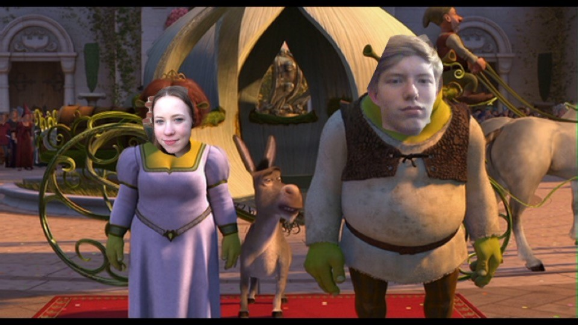

Hun verhaal
Er was een een prinses genaamt Lisan...
En er was een oger genaamt Aron en die vond prinses Lisan leuk en toen ging hij naar haar toe.
Hij was elke dag bij haar en ze vonden elkaar allebei super leuk.
De bruiloft
Aron ging proposen naar Lisan toen was Lisan zo van ja omg ja.
2 Dagen later gingen ze trouwen.
Het was helemaal fancy enz en toen ze getrouwd waren gingen ze zoenen OMG.
Toen werd Lisan voor altijd een oger.
Daarna kregen ze oger babys en leefden ze nog lang en gelukkig.

Hier gaan ze zoenen OMG